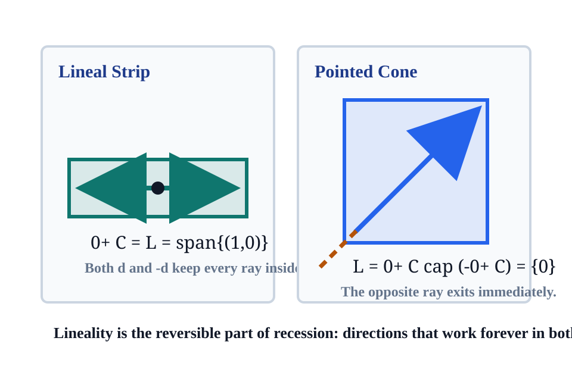

Recession directions are asymptotic certificates: they say which rays stay feasible, which functions stop growing, and which optimization problems can escape to infinity.
rays
cones
lineality
horizons
optimization
Lecture Goal
Turn unboundedness into a checklist: identify recession directions, separate reversible lineality from pointed escape, and read function behavior through epigraph horizons.
Notebook Grounding
The section notebook checks the invariant that adding a recession direction keeps sampled points inside the convex set.
Teaching Thread
Every later test asks the same question: what happens to \(x+t d\) or \(f(x+t d)\) as \(t\) grows?
Ray Test
direction that never leaves
Direction That Never Leaves
Ray Certificate
\(x+t d\in C\quad\hbox{for every }x\in C,\ t\ge 0.\)
What Is Being Certified?
The vector \(d\) is not just a long step from one point. It is a direction that every point of the convex set can follow forever.
Why Convexity Helps
If one forward shift is always safe, convexity fills the intermediate segment and repeated shifts build the whole half-line.
Inspection Prompt
Move the base point. If the same direction works from every point, the direction belongs to the recession cone.
Definition
0+ C
Recession Cone Definition
Definition
\(0^+C=\{d: C+t d\subseteq C\ \hbox{for all }t\ge 0\}\).
Core Shape
\(0^+C\) is a convex cone containing \(0\). If \(C\) is closed, its horizon limits recover the same cone.
Base-Point Form
\(d\in 0^+C\iff x+t d\in C\) for every \(x\in C\) and \(t\ge 0\).
Three Equivalent Probes
Translate the whole set: \(C+t d\subseteq C\).
Trace one ray from each base point.
For closed \(C\), take limits of normalized faraway points.
What The Cone Forgets
The cone records directions at infinity, not where the set begins. Two translated copies of \(C\) have the same recession cone.
Reversible Escape
lineality space
Lineality Space
Definition
\(L(C)=0^+C\cap(-0^+C)\).
Meaning
A direction in \(L(C)\) can be followed forever forward and backward. Through every point of \(C\), the full line parallel to that direction remains in \(C\).
Decomposition Lens
Lineality is the flat part at infinity. The remaining quotient geometry is the pointed part where escape has a preferred sign.
Optimization Warning
Objective functions that are flat along lineality directions can have whole affine families of minimizers or ambiguous search paths.

Boundedness Test
closed convex sets
Boundedness Certificate
Theorem
For a nonempty closed convex set \(C\subset\mathbb{R}^n\), \(C\) is bounded if and only if \(0^+C=\{0\}\).
How To Use It
To prove boundedness, rule out every nonzero ray. To prove unboundedness, exhibit one nonzero recession direction.
Proof Roadmap
An unbounded sequence has normalized directions with a convergent subsequence; closed convexity turns the limiting direction into a ray certificate.
Hypothesis Watch
Closedness is not cosmetic. Without it, limiting directions can appear in the closure before they are usable from the original set.
If \(d_C\in0^+C\) and \(d_D\in0^+D\), then \(d_C+d_D\in0^+(C+D)\). Equality is safe in polyhedral and standard closed settings, but should be checked when closure is delicate.
Preimage Rule
For linear \(A\), \(0^+(A^{-1}C)=\{d:Ad\in0^+C\}\) whenever the preimage is nonempty and closed.
\(f^{0+}(d)=\sup_{t>0}\frac{f(x+t d)-f(x)}{t}\), independent of \(x\in\operatorname{dom} f\).
Interpretation
\(f^{0+}(d)\) is the asymptotic slope in direction \(d\). Negative values drive descent; zero values mark flat escape; positive or infinite values resist escape.
Domain Link
If \(d\) is impossible in the domain at infinity, the recession value becomes \(+\infty\) through the epigraph view.
The direction does not decrease at a negative linear rate. It lets the function approach a limiting height without ever touching it.
Geometric Reading
The epigraph has a horizontal recession ray, but the boundary value at height zero is missing from the graph.
Existence Lesson
Ruling out negative recession directions prevents \(-\infty\), but a nonzero zero-slope direction can still destroy attainment.
Computational Lab
ray finder
Numerical Ray Finder
Finite-Dimensional Diagnostic
For a polyhedral feasible region and a convex objective, search first for nonzero feasible recession directions, then score them by the recession value.
Given A x <= b and objective f:
1. solve A d <= 0 with ||d||_1 = 1
2. if no d exists, the set passes the ray test
3. minimize c^T d for linear f
4. for nonlinear f, sample slopes [f(x+t d)-f(x)]/t
5. classify negative, zero, or positive horizon behavior
Numerical Humility
A sampled ray finder is a diagnostic. A proof still needs the exact inequality, cone, or recession-function argument.
assets/slide-checks.json records the stage size, slide count, metadata contract, local visual assets, and theorem invariants used in this deck.
How To Use The Ledger
Before solving a problem, fill in the row that matches the object. The recession test tells you whether the object is bounded, flat, descending, or merely large.
Common Mistake
Do not treat every nonzero recession direction as negative descent. Zero recession directions often signal nonattainment rather than value \(-\infty\).
Recap
asymptotic certificates
Recap
1. Rays Certify
A direction belongs to \(0^+C\) only when every point can follow it forever.
2. Lineality Reverses
The lineality space is the part of recession that works in both signs.
3. Epigraphs Lift
The recession function is the horizon boundary of the epigraph.
4. Optimization Escapes
Negative recession gives \(-\infty\); zero recession can give nonattainment.